MOJE VJEŽBE
2. vježba - Bezierova krivulja, precizno crtanje
3. vježba - boja, transformacije
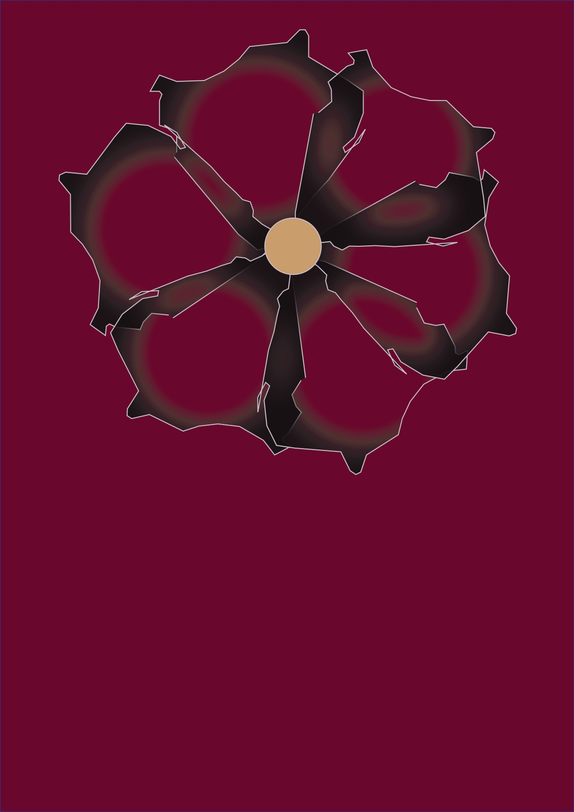
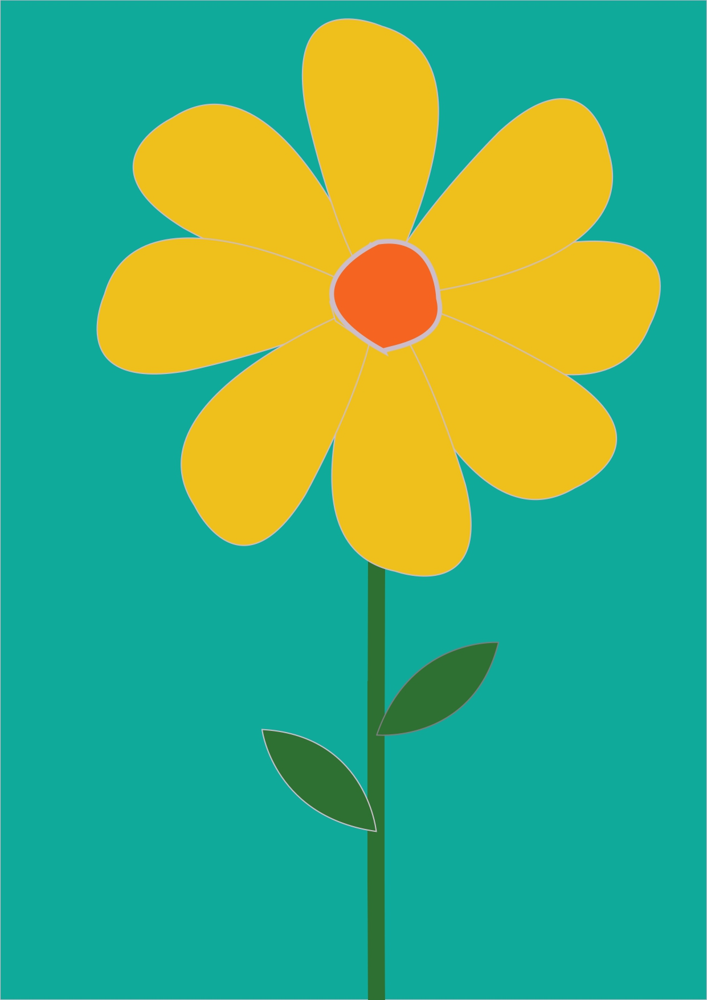
4. vježba - gradijenti, transparencija
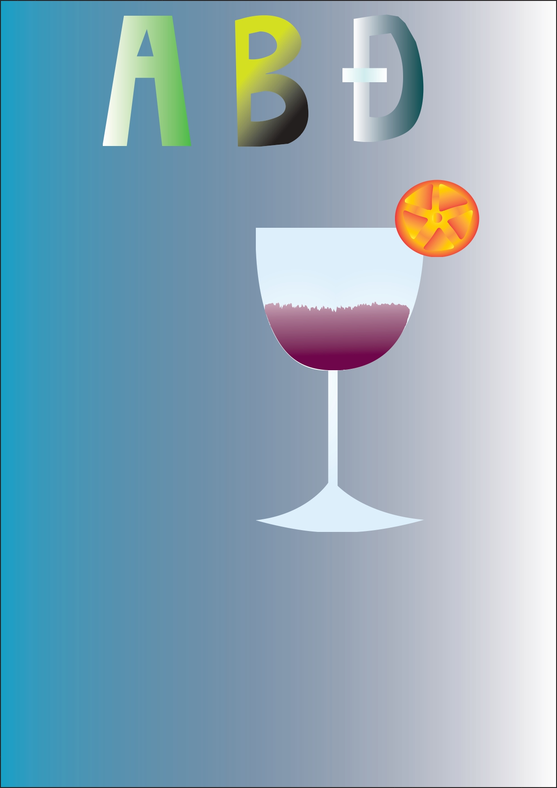
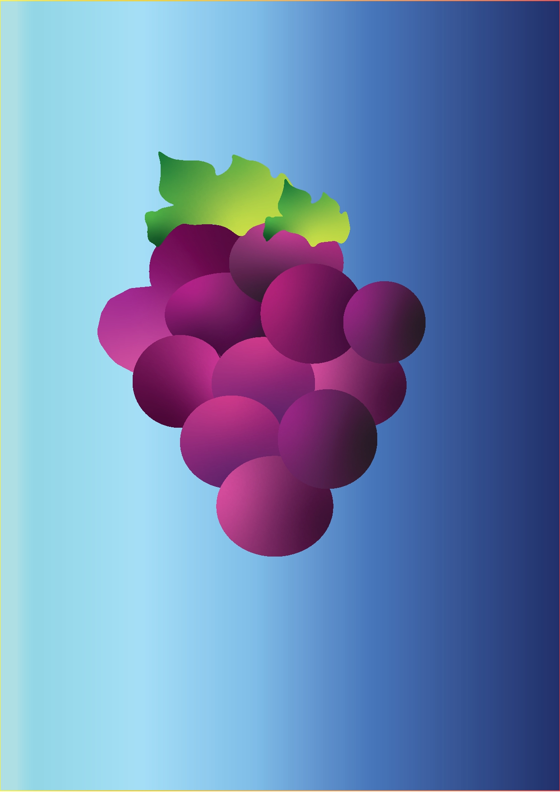
projektni zadatak - vektorska grafika
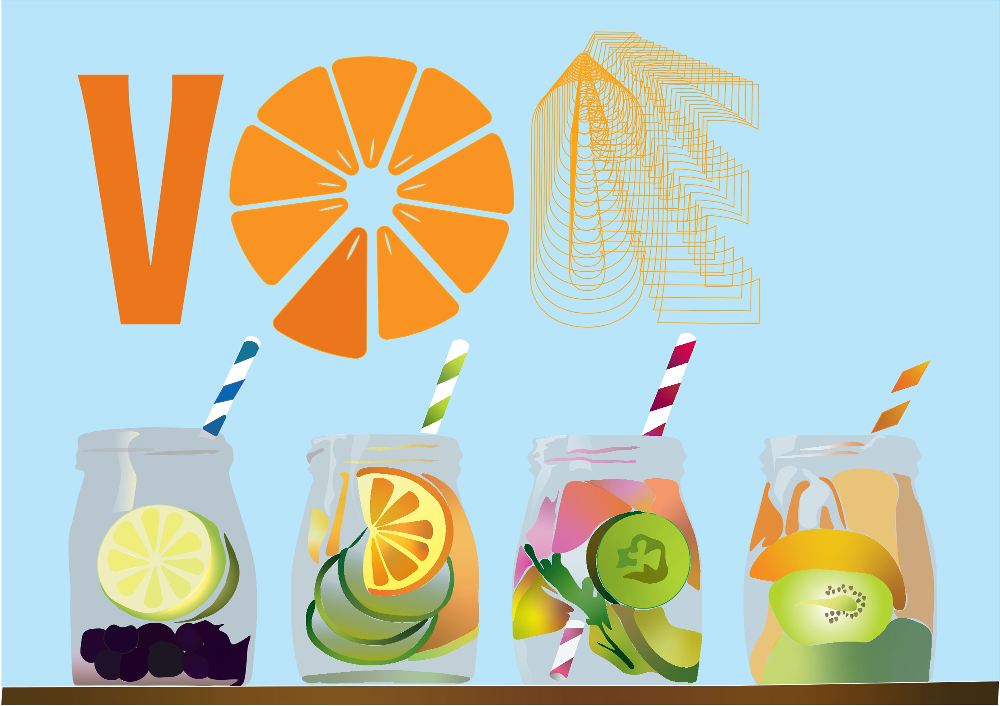
5. vježba - retuširanje
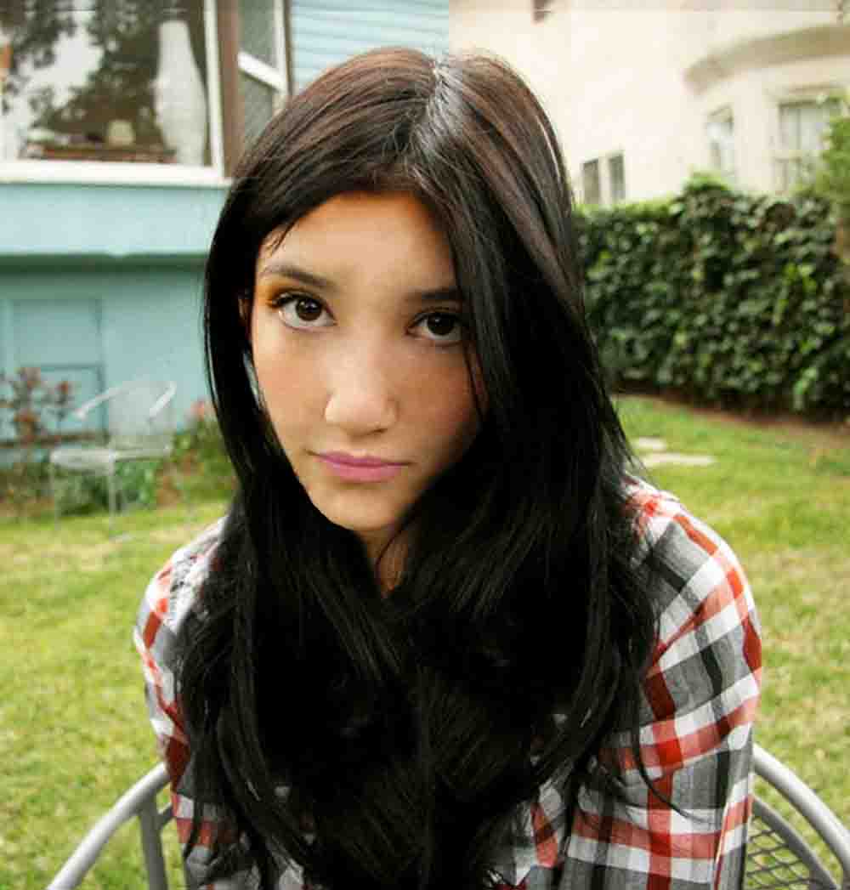
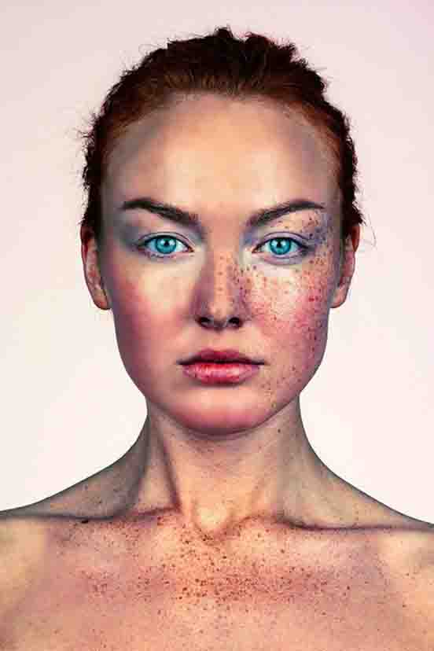
6. vježba - koloriranje
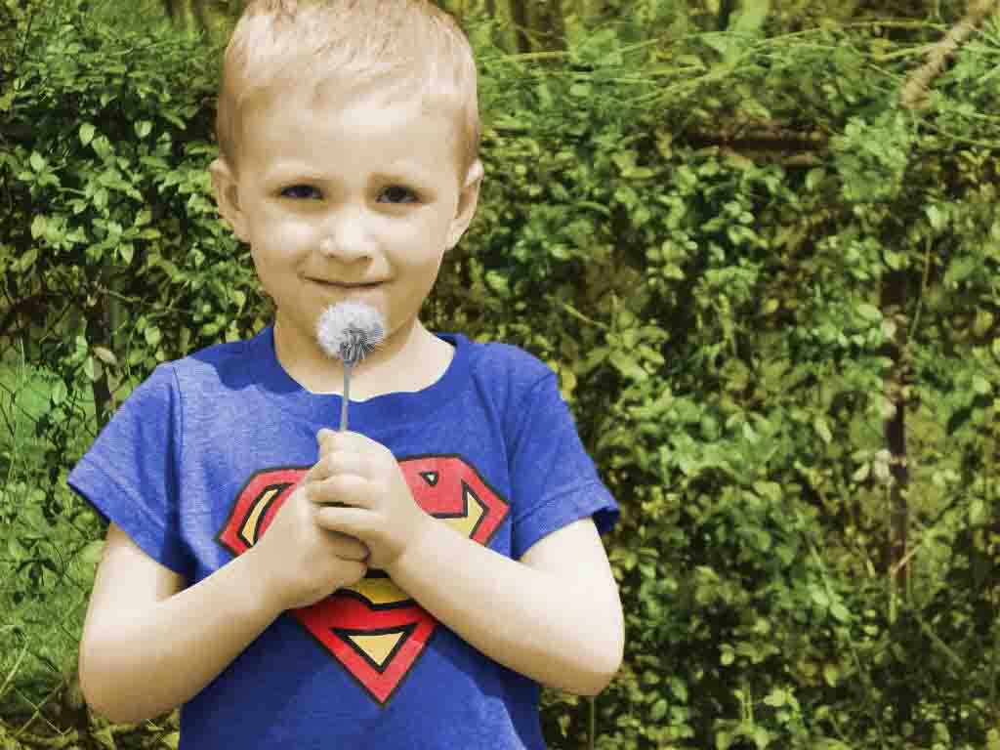
7. vježba - fotomontaža
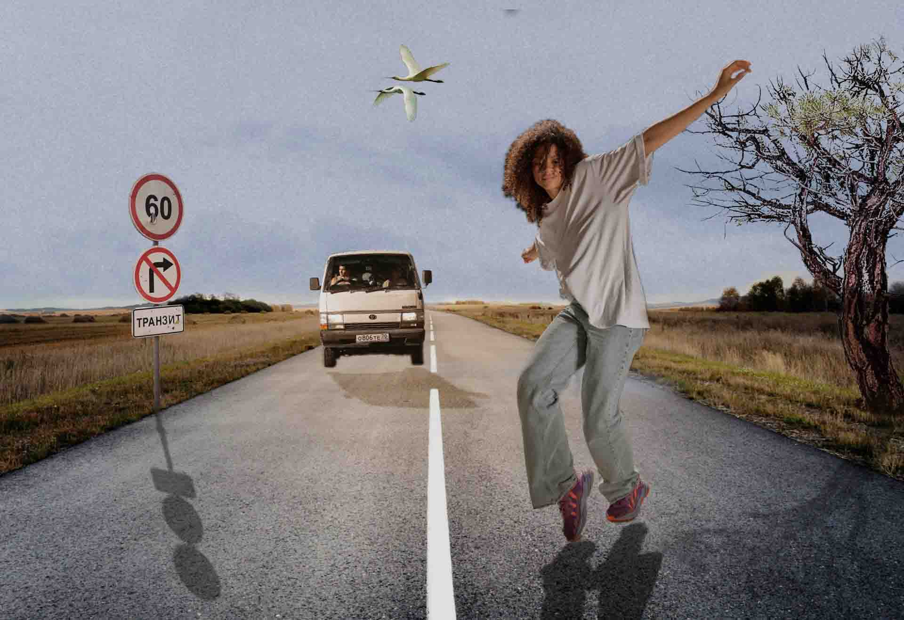
projektni zadatak - piksel grafika
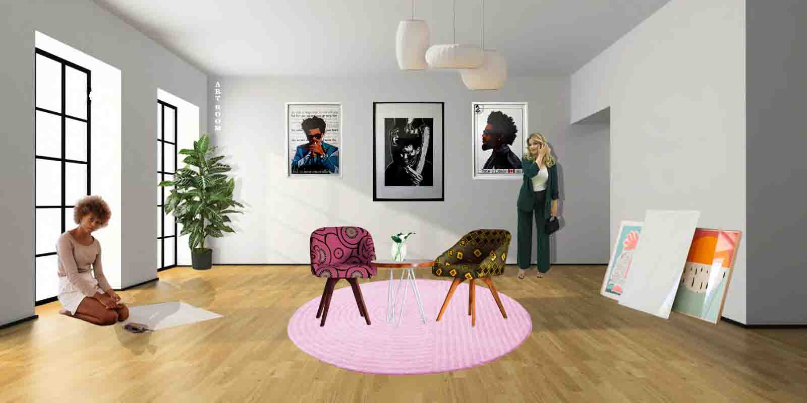
8. vježba - cinemagraf
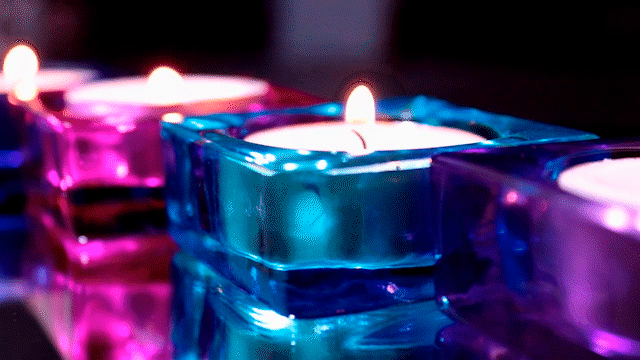

9. vježba - video